Освоение инструментов управления версиями и ветками (git-flow,
commitizen) необходимо для эффективной разработки и управления
проектами, особенно в командной работе. # Объект и предмет
исследования
Объект исследования: Репозитории Git и инструменты для управления
версиями и ветками.
Предмет исследования: Настройка и использование git-flow, commitizen
и стандартных коммитов для управления проектами.
Цели и задачи
Цель: Получить навыки работы с git-flow и conventional commits для
управления ветками и версиями.
Задачи: 1. Установить и настроить git-flow и commitizen. 2. Создать и
настроить репозиторий с поддержкой conventional commits. 3. Выполнить
релизы с автоматическим обновлением версий и журналов изменений.
Материалы и методы
Использование командной строки, инструментов git-flow, commitizen,
Node.js, GitHub, создание и управление ветками, выполнение коммитов и
релизов.
Создание презентации
Для
начала установим git-flow из коллекции репозиториев (рис. [-@fig:001]).
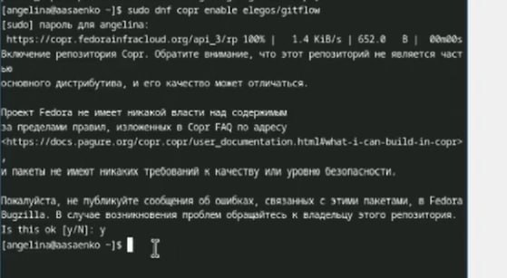
Установка
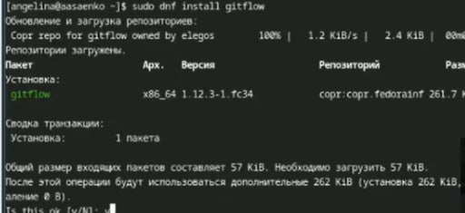
Установка
На
Node.js базируется программное обеспечение для семантического
версионирования и общепринятых коммитов. Установим ПО
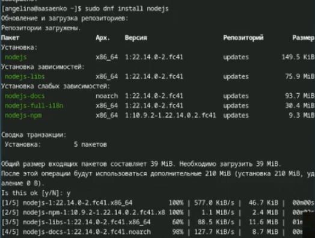
Установка nodejs
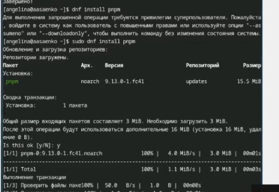
Установка pnpm
Для
работы с Node.js добавим каталог с исполняемыми файлами,
устанавливаемыми yarn, в переменную PATH
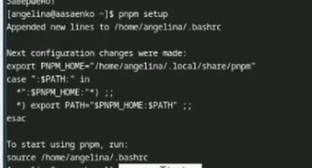
Запуск
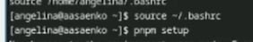
Перелогинимся или выполним
Данная
программа commitizen используется для помощи в форматировании коммитов.
При этом устанавливается скрипт git-cz, который мы и будем использовать
для коммитов.
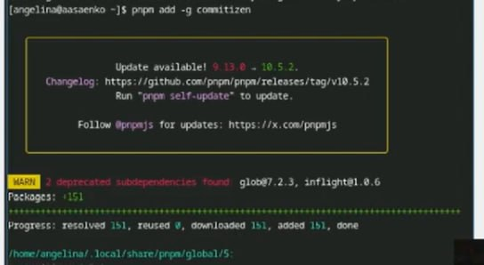
Добавление
Создаём
репозиторий на GitHub. Для примера назовём его git-extended
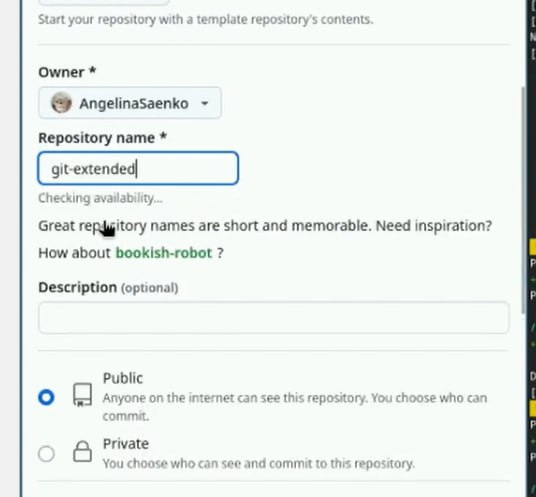
Создание репозитория
Делаем первый
коммит и выкладываем на github
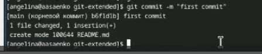
Первый коммит
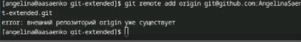
Добавление удалённого репозитория в мой
локальный Git-проект
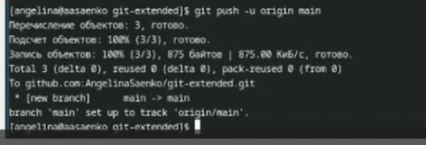
Отправка изменений
Далее сделаем
конфигурацию для пакетов Node.js
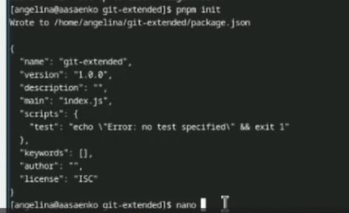
Конфигурация для пакетов
Node.js
Необходимо
заполнить несколько параметров пакета. Сконфигурим формат коммитов. Для
этого добавим в файл package.json команду для формирования коммитов
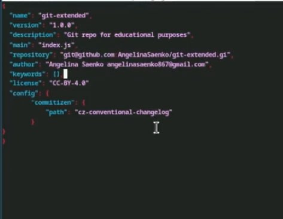
Изменяем файл
Добавим новые файлы
Добавление новых файлов
Выполним коммит
Коммит
Выбираем нужное
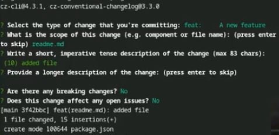
Выбор
Отправим на github
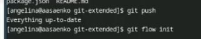
Отправка
Инициализируем git-flow
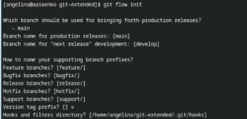
Инициализация git-flow
Проверим , что мы на ветке
develop
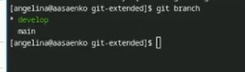
Проверка
Загрузим весь репозиторий
в хранилище
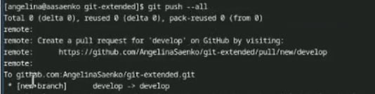
Загрузка репозитория
Установим
внешнюю ветку как вышестоящую для этой ветки
Установка внешней ветки
Создадим релиз с версией
1.0.0
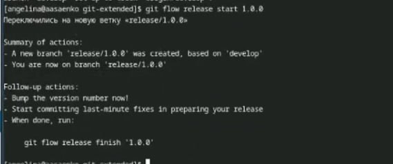
Создание релиза
Создадим журнал изменений
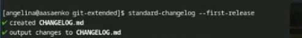
Создание журнала изменений
Добавим журнал изменений в
индекс
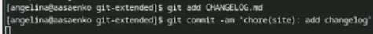
Добавление журнала
Зальём релизную ветку в
основную ветку
Заливание релизной ветки
Отправим данные на github
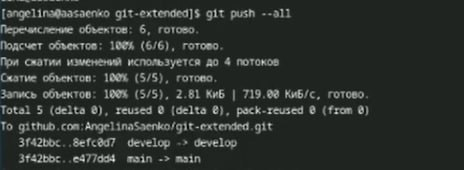
Отправка данных
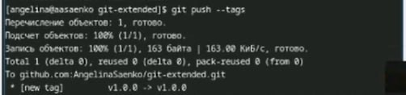
Отправка данных
Создадим
релиз на github. Для этого будем использовать утилиты работы с
github
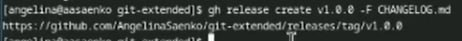
Создание релиза
Создадим ветку для
новой функциональности
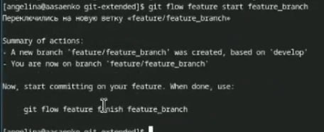
Создание ветки
Далее,
продолжаем работу c git как обычно.По окончании разработки новой
функциональности следующим шагом следует объединить ветку feature_branch
c develop
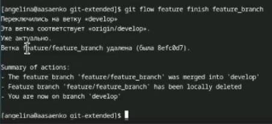
Объединяем ветки
Создадим релиз с версией
1.2.3
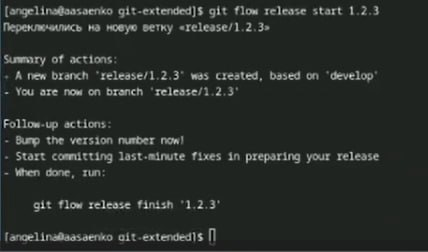
Создание релиза
Обновим
номер версии в файле package.json. Установим её в 1.2.3
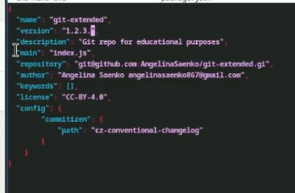
Обновим номер версии в файле
package.json. Установим её в 1.2.3
Создадим журнал изменений
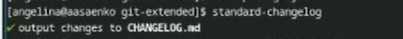
Создание журнала изменений
Добавим журнал изменений в
индекс
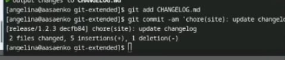
Добавление журнала изменений в
индекс
Зальём релизную ветку
в основную ветку
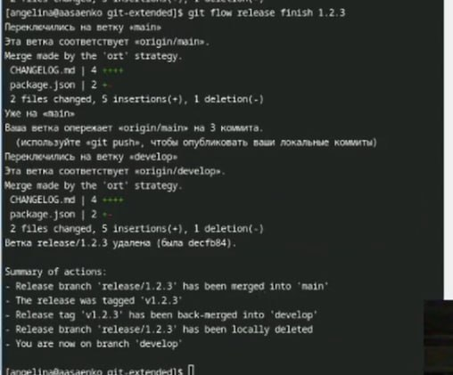
Зальём ветку
Отправим данные на github
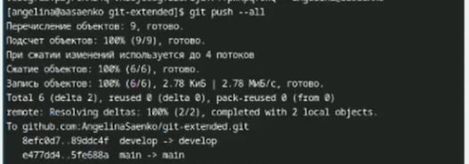
Отправка данных
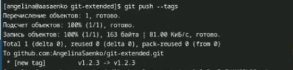
Отправка данных
Создадим
релиз на github с комментарием из журнала изменений
Создание релиза
Выводы
Освоены инструменты git-flow, commitizen и standard-changelog для
управления ветками, семантического версионирования и оформления
коммитов. Настроен репозиторий с поддержкой общепринятых коммитов,
созданы и завершены релизы с автоматическим обновлением версий и
журналов изменений. Получены навыки эффективного управления разработкой
и выпуском проектов.